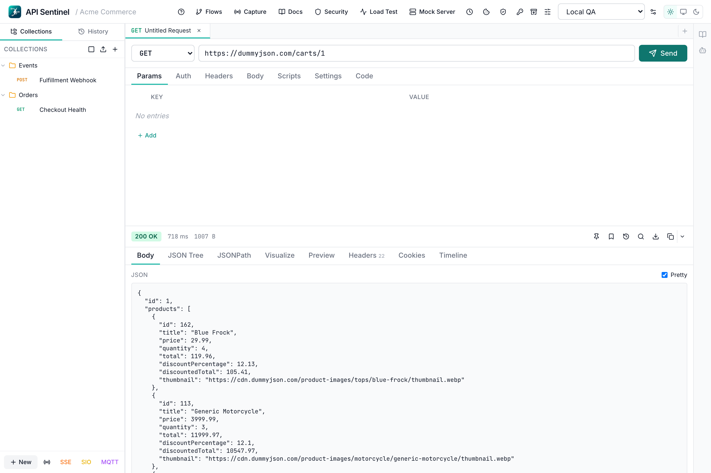

API Sentinel replaces Postman and Insomnia — completely free, with every feature running locally on your machine. REST testing, GraphQL, mock server, load testing, WebSocket, SSE, MQTT, security scans, flows, proxy capture and more. No account. No cloud. No subscription. Ever.

API SentinelPrivacy-First Architecture
Most API clients push you toward cloud accounts, sync your requests to their servers, and lock features behind subscriptions. API Sentinel works the other way around. Every collection, every environment, every request history snapshot — stored locally, owned by you, accessible offline.
Launch the app and start testing immediately. There is no sign-up screen, no email, and no forced login — now or ever.
Your requests, collections, environments, and history live on your filesystem only. No data is uploaded to any server.
Usage analytics are off by default. API Sentinel does not phone home unless you explicitly enable it.
No internet connection required to use the app. Ideal for air-gapped environments, restricted networks, and travel.
Complete Feature Set
No feature gates, no paid tiers. Every capability listed below is included in the free download and runs entirely on your machine.
Pricing
Every single capability is included — no freemium, no paid plan, no feature behind a paywall. What you see is what you get, forever.
Screenshots
Comparison
Full feature and privacy comparison across the three most popular API clients.
| Feature / Attribute | API Sentinel | Postman | Insomnia |
|---|---|---|---|
| REST API Testing | ✓ Free | ✓ Free | ✓ Free |
| GraphQL Client | ✓ Free | ✓ Free | ✓ Free |
| Collections & Environments | ✓ Free | ✓ Free | ✓ Free |
| Mock Server | ✓ Free | Paid plan | Limited |
| Load Testing | ✓ Free | Paid plan | ✗ No |
| Security Testing | ✓ Free | Paid plan | ✗ No |
| Collection Runner | ✓ Free | Limited free | Limited |
| Scheduled Runs | ✓ Free | Paid plan | ✗ No |
| Chained Flows | ✓ Free | Paid plan | ✗ No |
| Snapshot Regression | ✓ Free | Paid plan | ✗ No |
| WebSocket Client | ✓ Free | ✓ Free | Limited |
| SSE Client | ✓ Free | Partial | ✗ No |
| Socket.IO Client | ✓ Free | ✗ No | ✗ No |
| MQTT Client | ✓ Free | ✗ No | ✗ No |
| Proxy Capture | ✓ Free | Limited | ✗ No |
| AI Assistant | ✓ Free | Paid plan | ✗ No |
| No Account Required | ✓ Yes | ✗ Required | ✗ Required |
| Local-First Storage | ✓ Yes | ✗ Cloud | Partial |
| Works Fully Offline | ✓ Yes | Partial | Partial |
| No Telemetry by Default | ✓ Yes | ✗ No | ✗ No |
| Price | Free — always | Freemium / $12+/mo | Freemium / $8+/mo |
Download
Download for your platform. No account. No credit card. No subscription.
Every feature included. Everything runs on your machine.
FAQ
Yes, completely. Every feature — REST testing, GraphQL, mock server, load testing, WebSocket, SSE, MQTT, security scans, collection runner, scheduled runs, chained flows, proxy capture, snapshot regression, AI assistant — is included at no cost. There is no freemium tier, no paid plan, and no feature behind a paywall.
No. API Sentinel is local-first. All your requests, collections, environments, history, snapshots, and vault data are stored on your filesystem only. Nothing is uploaded to any server. Your API credentials, internal endpoints, and request data never leave your machine.
No account is required — now or ever. Download the installer, launch the app, and start making API requests immediately. There is no sign-up screen, no email verification, and no login screen.
Yes. API Sentinel works fully offline. No internet connection is required to use the app itself. The only internet activity is the actual API requests you choose to send.
API Sentinel runs on Windows (x64), macOS (Intel and Apple Silicon), and Linux (x64, .deb). Download the installer from the GitHub Releases page.
API Sentinel offers mock server, load testing, security testing, scheduled runs, chained flows, SSE, Socket.IO, MQTT, proxy capture, snapshot regression, and AI assistant — all free. Postman locks most of these behind paid plans starting at $12/month and requires a cloud account. API Sentinel stores everything locally and requires no account.
Telemetry is off by default. API Sentinel does not phone home unless you explicitly enable it. No usage data is collected or transmitted without your knowledge.
Current macOS builds are preview releases and are not yet notarized by Apple. Right-click the app in Finder → Open, then approve it in System Settings → Privacy & Security → Open Anyway. Full notarization is on the roadmap.